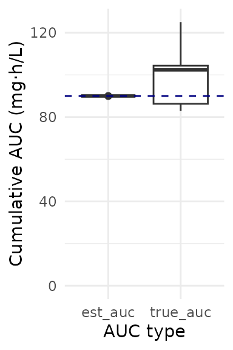

Busulfan MIPD
busulfan_mipd.RmdIn this example script, we will estimate target attainment for busulfan.
To account for model misspecification, we will use one model to simulate (McCune, 2014) and one model to estimate (Shukla, 2020). This is a simplified version of a published study in which we compared non-compartmental analysis (NCA) with MAP Bayesian estimation for AUC-guided busulfan dosing.
#> Loading required package: pkbusulfanmccune
#> Warning in library(package, lib.loc = lib.loc, character.only = TRUE,
#> logical.return = TRUE, : there is no package called 'pkbusulfanmccune'
#> - Retrieving model definition ()...
#> - Package pkbusulfanmccune not installed yet.
#> - Compiling model.
#> * Adding model definition to R package.
#> [,1]
#> [1,] "\\[MODULE\\]"
#> [2,] "\\[N_COMP\\]"
#> [3,] "\\[OBS_COMP\\]"
#> [4,] "\\[DOSE_COMP\\]"
#> [5,] "\\[OBS_SCALE\\]"
#> [6,] "\\[OBS_VARIABLE\\]"
#> [7,] "\\[DOSE_BIOAV\\]"
#> [8,] "\\[DOSE_DUPLICATE\\]"
#> [9,] "\\[CODE\\]"
#> [10,] "\\[PK_CODE\\]"
#> [11,] "\\[DOSE_CODE\\]"
#> [12,] "\\[STATE_INIT\\]"
#> [13,] "\\[PARS\\]"
#> [14,] "\\[REPARAM\\]"
#> [15,] "\\[MIXTURE\\]"
#> [16,] "\\[VARS\\]"
#> [17,] "\\[COVS\\]"
#> [18,] "\\[FIXED\\]"
#> [19,] "\\[LAGTIME\\]"
#> [20,] "\\[DURATION_SCALE\\]"
#> [21,] "\\[USE_IOV\\]"
#> [22,] "\\[IOV\\]"
#> [23,] "\\[DEVELOPMENT\\]"
#> [24,] "\\[LTBS\\]"
#> [25,] "\\[MISC\\]"
#> [26,] "\\[CMT_MAPPING\\]"
#> [27,] "\\[INT_STEP_SIZE\\]"
#> [28,] "\\[COMMENTS\\]"
#> [29,] "\\[NONMEM\\]"
#> [,2]
#> [1,] "pkbusulfanmccune"
#> [2,] "3"
#> [3,] "1"
#> [4,] "1"
#> [5,] "(V * FSIZE_V * FSEXV) * exp(kappa_V) / 1000"
#> [6,] "NULL"
#> [7,] "c(\"1\")"
#> [8,] "NULL"
#> [9,] " kappa_CL = 1e-6; ;\n if(t >= iov_bin[0] && t < iov_bin[1]) { kappa_CL = kappa_CL_1 + 1e-6; } ;\n if(t >= iov_bin[1] && t < iov_bin[2]) { kappa_CL = kappa_CL_2 + 1e-6; } ;\n if(t >= iov_bin[2] && t < iov_bin[3]) { kappa_CL = kappa_CL_3 + 1e-6; } ;\n if(t >= iov_bin[3] && t < iov_bin[4]) { kappa_CL = kappa_CL_4 + 1e-6; } ;\n if(t >= iov_bin[4] && t < iov_bin[5]) { kappa_CL = kappa_CL_5 + 1e-6; } ;\n kappa_V = 1e-6; ;\n if(t >= iov_bin[0] && t < iov_bin[1]) { kappa_V = kappa_V_1 + 1e-6; } ;\n if(t >= iov_bin[1] && t < iov_bin[2]) { kappa_V = kappa_V_2 + 1e-6; } ;\n if(t >= iov_bin[2] && t < iov_bin[3]) { kappa_V = kappa_V_3 + 1e-6; } ;\n if(t >= iov_bin[3] && t < iov_bin[4]) { kappa_V = kappa_V_4 + 1e-6; } ;\n if(t >= iov_bin[4] && t < iov_bin[5]) { kappa_V = kappa_V_5 + 1e-6; } ;\n;\n FTIM = 1;\n if(t > T_CL_EFF+6) { ;\n FTIM = 0.932 ;\n };\n if(t > T_CL_EFF+36) { ;\n FTIM = 0.919 ;\n };\n CL_avg = CL * FSIZE_CL * FMAT * FTIM ;\n CLi = CL_avg * exp(kappa_CL) ;\n V_avg = V * FSIZE_V * FSEXV ;\n Vi = V_avg * exp(kappa_V) ;\n dAdt[0] = -(CLi/Vi)*A[0] + (Qi/V2i)*A[1] - (Qi/Vi)*A[0] ;\n dAdt[1] = - (Qi/V2i)*A[1] + (Qi/Vi)*A[0] ;\n dAdt[2] = (A[0]/scale) ;\n"
#> [10,] "\n HTM = HT/100 ;\n BMI = WT/(HTM*HTM) ;\n FSEXV = 1 ;\n FFM = WT * 0.85 ;\n if(SEX == 0) {;\n WHS_MAX = 37.99;\n WHS_50 = 35.98 ;\n FSEXV = 1.07 ;\n } else {;\n WHS_MAX = 42.92 ;\n WHS_50 = 30.93 ;\n } ;\n FFM = WHS_MAX * (HTM*HTM) * (WT/(WHS_50*(HTM*HTM) + WT)) ;\n FATKG = WT-FFM ;\n NFM_CL = FFM + 0.509 * FATKG ;\n NFM_V = FFM + 0.203 * FATKG ;\n FSIZE_CL = pow(NFM_CL/70, 0.75) ;\n FSIZE_V = NFM_V/70 ;\n PMA = AGE * 52.1775 + 40 ;\n FMAT = 1.0 / (1.0 + pow((PMA/(TM50)), -HILL)) ;\n V2i = V2 * FSIZE_V * FSEXV ;\n Qi = Q * FSIZE_CL ;\n ;\n"
#> [11,] ""
#> [12,] "NULL"
#> [13,] "c(\"CL\", \"V\", \"Q\", \"V2\", \"TM50\", \"HILL\", \"kappa_V_1\", \"kappa_V_2\", \"kappa_V_3\", \"kappa_V_4\", \"kappa_V_5\", \"kappa_CL_1\", \"kappa_CL_2\", \"kappa_CL_3\", \"kappa_CL_4\", \"kappa_CL_5\")"
#> [14,] "NULL"
#> [15,] "NULL"
#> [16,] "c(\"CL_avg\", \"CLi\", \"V_avg\", \"Vi\", \"Qi\", \"V2i\", \"HTM\", \"BMI\", \"FFM\", \"FATKG\", \"NFM_CL\", \"NFM_V\", \"FSIZE_CL\", \"FSIZE_V\", \"FMAT\", \"FSIZE\", \"FSEXV\", \"FTIM\", \"PMA\", \"WHS_MAX\", \"WHS_50\", \"kappa_V\", \"kappa_CL\")"
#> [17,] "c(\"AGE\", \"WT\", \"HT\", \"SEX\", \"T_CL_EFF\")"
#> [18,] "c(\"TM50\", \"HILL\")"
#> [19,] "NULL"
#> [20,] "NULL"
#> [21,] "FALSE"
#> [22,] "use = TRUE, cv = list(CL = 0.113, V = 0.224), n_bins = 5L, bins = c(0L, 24L, 48L, 72L, 96L, 9999L)"
#> [23,] ""
#> [24,] "FALSE"
#> [25,] "list(model_type = \"2cmt_iv\", linearity = \"linear\", init_parameter = FALSE, int_step_size = 0.01)"
#> [26,] "NULL"
#> [27,] "NULL"
#> [28,] "\n - "
#> [29,] "NULL"
#> Loading required package: pkbusulfanshukla
#> Warning in library(package, lib.loc = lib.loc, character.only = TRUE,
#> logical.return = TRUE, : there is no package called 'pkbusulfanshukla'
#> - Retrieving model definition ()...
#> - Package pkbusulfanshukla not installed yet.
#> - Compiling model.
#> * Adding model definition to R package.
#> [,1]
#> [1,] "\\[MODULE\\]"
#> [2,] "\\[N_COMP\\]"
#> [3,] "\\[OBS_COMP\\]"
#> [4,] "\\[DOSE_COMP\\]"
#> [5,] "\\[OBS_SCALE\\]"
#> [6,] "\\[OBS_VARIABLE\\]"
#> [7,] "\\[DOSE_BIOAV\\]"
#> [8,] "\\[DOSE_DUPLICATE\\]"
#> [9,] "\\[CODE\\]"
#> [10,] "\\[PK_CODE\\]"
#> [11,] "\\[DOSE_CODE\\]"
#> [12,] "\\[STATE_INIT\\]"
#> [13,] "\\[PARS\\]"
#> [14,] "\\[REPARAM\\]"
#> [15,] "\\[MIXTURE\\]"
#> [16,] "\\[VARS\\]"
#> [17,] "\\[COVS\\]"
#> [18,] "\\[FIXED\\]"
#> [19,] "\\[LAGTIME\\]"
#> [20,] "\\[DURATION_SCALE\\]"
#> [21,] "\\[USE_IOV\\]"
#> [22,] "\\[IOV\\]"
#> [23,] "\\[DEVELOPMENT\\]"
#> [24,] "\\[LTBS\\]"
#> [25,] "\\[MISC\\]"
#> [26,] "\\[CMT_MAPPING\\]"
#> [27,] "\\[INT_STEP_SIZE\\]"
#> [28,] "\\[COMMENTS\\]"
#> [29,] "\\[NONMEM\\]"
#> [,2]
#> [1,] "pkbusulfanshukla"
#> [2,] "2"
#> [3,] "1"
#> [4,] "1"
#> [5,] "Vi / 1000.0"
#> [6,] "NULL"
#> [7,] "c(\"1\")"
#> [8,] "NULL"
#> [9,] " kappa_CL = 1e-6; ;\n if(t >= iov_bin[0] && t < iov_bin[1]) { kappa_CL = kappa_CL_1 + 1e-6; } ;\n if(t >= iov_bin[1] && t < iov_bin[2]) { kappa_CL = kappa_CL_2 + 1e-6; } ;\n if(t >= iov_bin[2] && t < iov_bin[3]) { kappa_CL = kappa_CL_3 + 1e-6; } ;\n if(t >= iov_bin[3] && t < iov_bin[4]) { kappa_CL = kappa_CL_4 + 1e-6; } ;\n if(t >= iov_bin[4] && t < iov_bin[5]) { kappa_CL = kappa_CL_5 + 1e-6; } ;\n kappa_V = 1e-6; ;\n if(t >= iov_bin[0] && t < iov_bin[1]) { kappa_V = kappa_V_1 + 1e-6; } ;\n if(t >= iov_bin[1] && t < iov_bin[2]) { kappa_V = kappa_V_2 + 1e-6; } ;\n if(t >= iov_bin[2] && t < iov_bin[3]) { kappa_V = kappa_V_3 + 1e-6; } ;\n if(t >= iov_bin[3] && t < iov_bin[4]) { kappa_V = kappa_V_4 + 1e-6; } ;\n if(t >= iov_bin[4] && t < iov_bin[5]) { kappa_V = kappa_V_5 + 1e-6; } ;\n;\n DAY = 0; ;\n if(t > 24) { DAY = 1; };\n CL_avg = CL * FMAT * FSIZE * FREGI * (1 + TH_DAY * DAY);;\n CLi = CL_avg * exp(kappa_CL) ;\n Vi = V_avg * exp(kappa_V) ;\n dAdt[0] = -(CLi/Vi) * A[0];;\n dAdt[1] = (A[0]/(Vi / 1000.0));;\n"
#> [10,] "\n BMI = WT/(HT*HT/1e4); ;\n if(SEX == 0) {;\n FFM = (1.11 + ((1-1.11)/(1+pow((AGE/7.1),-1.1)))) * ((9270 * WT)/(8780 + (244 * BMI))); ;\n } ;\n if(SEX != 0) {;\n FFM = (0.88 + ((1-0.88)/(1+pow((AGE/13.4),-12.7)))) * ((9270 * WT)/(6680 + (216 * BMI))); ;\n };\n FMAT = (MAT_MAG + (1-MAT_MAG)*(1-exp(-AGE*K_MAT)));;\n FSIZE = pow(FFM/12, 0.75);;\n FREGI = (1 + (TH_REGI * REGI));;\n V_avg = V * FFM/12.0 ;\n ;\n"
#> [11,] ""
#> [12,] "NULL"
#> [13,] "c(\"CL\", \"V\", \"MAT_MAG\", \"K_MAT\", \"TH_REGI\", \"TH_DAY\", \"kappa_V_1\", \"kappa_V_2\", \"kappa_V_3\", \"kappa_V_4\", \"kappa_V_5\", \"kappa_CL_1\", \"kappa_CL_2\", \"kappa_CL_3\", \"kappa_CL_4\", \"kappa_CL_5\")"
#> [14,] "NULL"
#> [15,] "NULL"
#> [16,] "c(\"CLi\", \"Vi\", \"BMI\", \"FFM\", \"FMAT\", \"FSIZE\", \"FREGI\", \"DAY\", \"CL_avg\", \"V_avg\", \"kappa_V\", \"kappa_CL\")"
#> [17,] "c(\"AGE\", \"WT\", \"HT\", \"SEX\", \"REGI\")"
#> [18,] "c(\"MAT_MAG\", \"K_MAT\", \"TH_REGI\", \"TH_DAY\")"
#> [19,] "NULL"
#> [20,] "NULL"
#> [21,] "FALSE"
#> [22,] "cv = list(CL = 0.1288, V = 0.1334), n_bins = 5L, bins = c(0L, 24L, 48L, 72L, 96L, 9999L)"
#> [23,] ""
#> [24,] "FALSE"
#> [25,] "list(model_type = \"1cmt_iv\", linearity = \"linear\", init_parameter = FALSE)"
#> [26,] "NULL"
#> [27,] "NULL"
#> [28,] "\n - "
#> [29,] "NULL"
library(mipdtrial)
if(!require(pkbusulfanmccune, warn.conflicts = FALSE)) {
PKPDsim::install_default_literature_model("pk_busulfan_mccune")
library(pkbusulfanmccune)
}
if (!require(pkbusulfanshukla, warn.conflicts = FALSE)) {
PKPDsim::install_default_literature_model("pk_busulfan_shukla")
library(pkbusulfanshukla)
}
# For example data
library(NHANES)
# For data handling/plotting
library(dplyr, warn.conflicts = FALSE)
library(tidyr, warn.conflicts = FALSE)
library(ggplot2, warn.conflicts = FALSE)1. Define simulation parameters
In this simple trial, patients will be dosed once per day for four days, with 4 levels collected per day, at 3.5, 4, 6 and 8 hours post-dose. We will adjust doses 2, 3, and 4 to achieve a target cumulative AUC of 90 by t = 192 hours.
2. Create a set of digital patient covariates
We will use the NHANES data set for covariate distributions. This is a data set of five thousand individuals collected by the US National Center for Health Statistics. See package documentation for more details.
We will also use the dplyr package for some basic data
processing. Since every data set is un-tidy in its own way (“Tidy
datasets are all alike, but every messy dataset is messy in its own
way.” –– Hadley
Wickham), data cleaning should be handled outside of the
mipdtrial tools. The functions expect all patient
covariates to be numeric.
dat <- NHANES::NHANES %>%
# take just the first record per patient
group_by(ID) %>%
slice(1) %>%
ungroup() %>%
# convert columns to numeric
mutate(Gender = ifelse(Gender == "male", 1, 0)) %>% # as defined in models
select(ID, Gender, Age, Weight, Height) %>%
# include only patients with all information available
filter(!is.na(Gender), !is.na(Weight), !is.na(Height), !is.na(Age))The next step is to make sure we have all the covariates we need. Busulfan has a known time-dependent relationship with clearance, and so the McCune model takes a covariate that indicates at what time this relationship should start (T_CL_EFF; useful for test doses that should not impact busulfan clearance). We will set this to zero for all patients. The Shukla model also takes conditioning regimen as a covariate, since co-medication with Clofarabine and Fludarabine was associated with a change in clearance (REGI). We will also set this to zero for all patients.
Other models might require fat-free mass or other calculated covariates. This would be a good time to do that sort of processing on your data set!
You may also need to convert between units (height in m to cm, for example.)
dat$T_CL_EFF <- 0
dat$REGI <- 0Here are the first few rows of our data set:
head(dat)
#> # A tibble: 6 × 7
#> ID Gender Age Weight Height T_CL_EFF REGI
#> <int> <dbl> <int> <dbl> <dbl> <dbl> <dbl>
#> 1 51624 1 34 87.4 165. 0 0
#> 2 51625 1 4 17 105. 0 0
#> 3 51630 0 49 86.7 168. 0 0
#> 4 51638 1 9 29.8 133. 0 0
#> 5 51646 1 8 35.2 131. 0 0
#> 6 51647 0 45 75.7 167. 0 0We will also only look at the first 10 patients in our data set, in the interest of speed.
ids <- dat$ID[1:10]3. Load model definitions
We need to define the model parameters and variability terms for our simulation. For this study, we will use the ones defined in the models.
# Set up simulation model ("true")
model_sim <- pkbusulfanmccune::model()
parameters_sim <- pkbusulfanmccune::parameters()
omega_sim <- pkbusulfanmccune::omega_matrix()
ruv_sim <- pkbusulfanmccune::ruv()
# Set up estimation model (model for MIPD)
model_est <- pkbusulfanshukla::model()
parameters_est <- pkbusulfanshukla::parameters()
omega_est <- pkbusulfanshukla::omega_matrix()
ruv_est <- pkbusulfanshukla::ruv()We also need to link the covariates in our data set to the covariates expected in the model.
# check which covariates are required for your model using
# `attr(model_sim, "covariates")`
# check which covariates are in your data set using `colnames(dat)`
cov_mapping <- c(
AGE = "Age",
WT = "Weight",
HT = "Height",
SEX = "Gender",
T_CL_EFF = "T_CL_EFF",
REGI = "REGI"
)4. Initialize output metrics of interest
We want to record both “true” cumulative AUC and estimated cumulative AUC, along with patient identifiers (i.e., id). We will pre-populate a data frame rather than iteratively binding rows, since that is more performant.
results <- data.frame(
id = ids,
iter = 1,
true_auc = NA_real_,
est_auc = NA_real_
)5. Simulate a trial!
Each patient will start at a dose of 3.2 mg/kg body weight. We will
then use mipdtrial::dose_grid_search to optimize doses to
attain a target of 90 mg*h/L.
For inter-individual variability terms, we will use the inter-individual variability described by our “true” model, since this should reflect the “true” distribution in patient pharmacokinetics. Later, we will estimate the individual PK parameters using our estimation model and the measured TDMs we “collect”.
For residual error terms, we will use the residual error of our “true” model, since this is supposed to reflect the “true” unexplained error (assay error, etc.). This function creates a data frame of error to add to each “true” simulated concentration to produced a measured therapeutic drug monitoring sample.
set.seed(1) # important for reproducibility
for (i in ids) {
# get patient covariates
covs <- create_cov_object(
dat[dat$ID == i,],
mapping = cov_mapping
)
# create initial dosing regimen (see PKPDsim::new_regimen for more info)
reg <- PKPDsim::new_regimen(
amt = 3.2 * covs$WT$value, # we will update this each "day" of the trial.
interval = 24,
n = 4,
t_inf = 3,
type = "infusion"
)
# randomly draw individual PK parameters
pars_true_i <- generate_iiv(
sim_model = model_sim,
omega = omega_sim,
parameters = parameters_sim
)
treatment_summary <- sample_and_adjust_by_dose(
adjust_at_dose = adjust_at_dose,
tdm_times = tdm_times,
regimen = reg,
covariates = covs,
pars_true_i = pars_true_i,
sim_model = model_sim,
sim_ruv = ruv_sim,
est_model = model_est,
parameters = parameters_est,
omega = omega_est,
ruv = ruv_est,
target_time = auc_times,
target = target,
dose_optimization_method = dose_adjust_map
)
# extract metrics of interest
results$true_auc[results$id == i] <- calc_auc_from_regimen(
regimen = treatment_summary$final_regimen,
parameters = pars_true_i, # true patient parameters
model = model_sim,
target_time = auc_times,
covariates = covs
)
final_parameters <- treatment_summary$additional_info[[length(treatment_summary$additional_info)]]
results$est_auc[results$id == i] <- calc_auc_from_regimen(
regimen = treatment_summary$final_regimen,
parameters = final_parameters, # estimated patient PK
model = model_est,
target_time = auc_times,
covariates = covs
)
}Here are the first few rows of our simulation results:
head(results)
#> id iter true_auc est_auc
#> 1 51624 1 83063.85 90006.79
#> 2 51625 1 103788.19 89998.38
#> 3 51630 1 83271.64 90045.76
#> 4 51638 1 95389.50 89999.14
#> 5 51646 1 82884.90 89965.09
#> 6 51647 1 104570.85 89964.216. Analyze results
How well did our patients get to target? It looks like we estimated that target attainment would be very high (all patients have an AUC very close to 90 mg*h/L), but “true” AUC was higher than that due to some model misspecification!
results %>%
pivot_longer(
c(true_auc, est_auc),
names_to = "auc_type",
values_to = "auc"
) %>%
ggplot() +
aes(x = auc_type, y = auc/1000) +
geom_boxplot() +
geom_hline(yintercept = 90, color = "navyblue", linetype = "dashed") +
scale_y_continuous(limit = c(0, NA)) +
theme_minimal() +
labs(
y = "Cumulative AUC (mg\u00B7h/L)",
x = "AUC type"
)
Even with some model misspecification, target attainment (within 20% of target AUC) was still high:
target_attainment <- results %>%
mutate(
ontarget = is_on_target(true_auc, target)) %>%
summarize(proportion_ontarget = mean(ontarget)) %>%
pull(proportion_ontarget)
target_attainment <- paste0(round(100 * target_attainment), "%")Overall, 90% of patients had a “true” AUC of 90 mg*h/L.
For an in-depth analysis of how differences between these two models impact target attainment, see Hughes et al., J PKPD (2024)